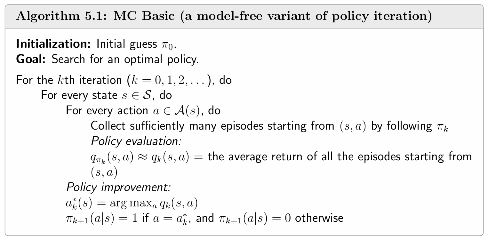
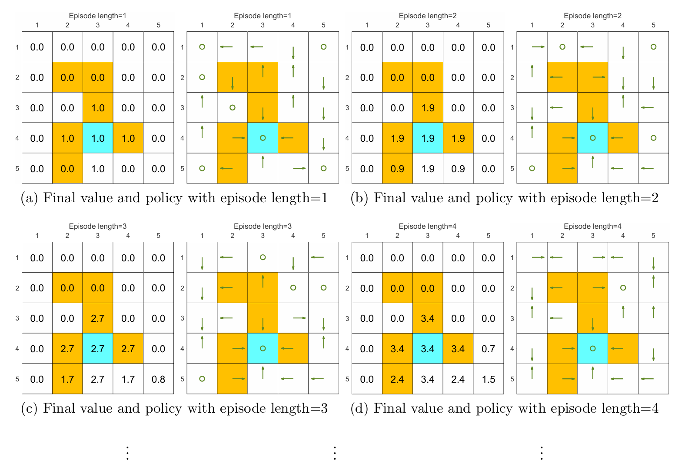
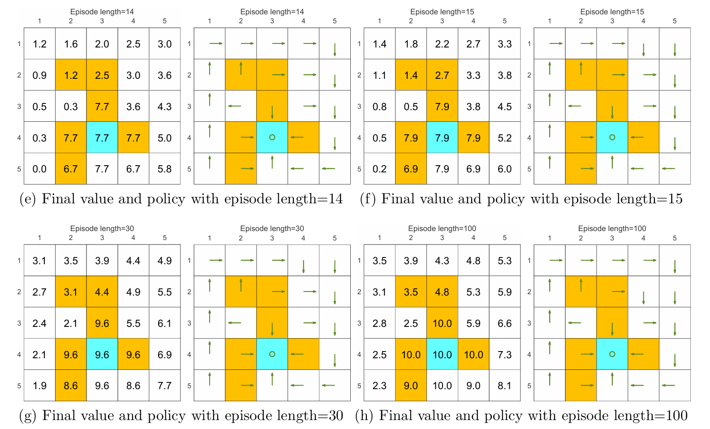
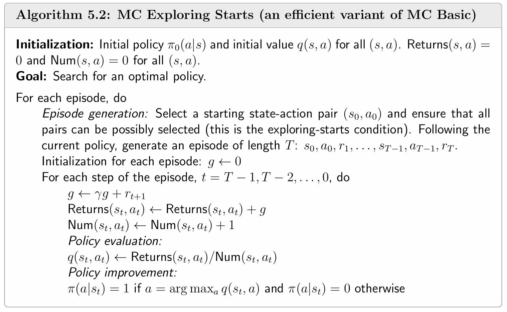
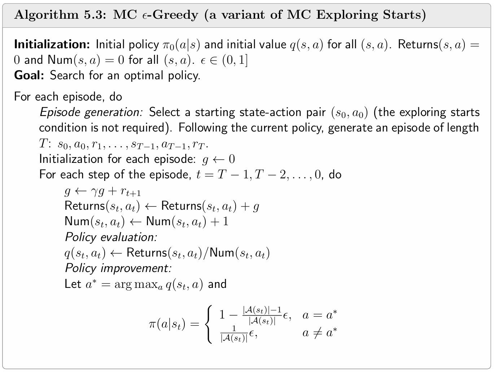
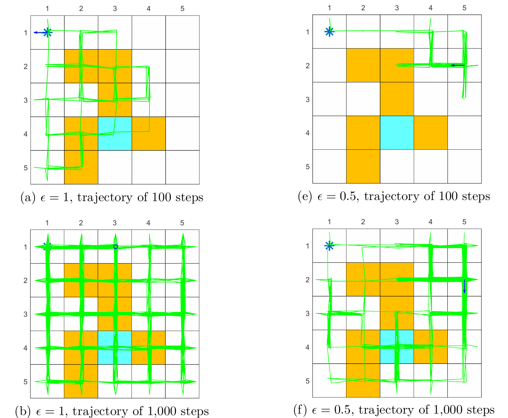
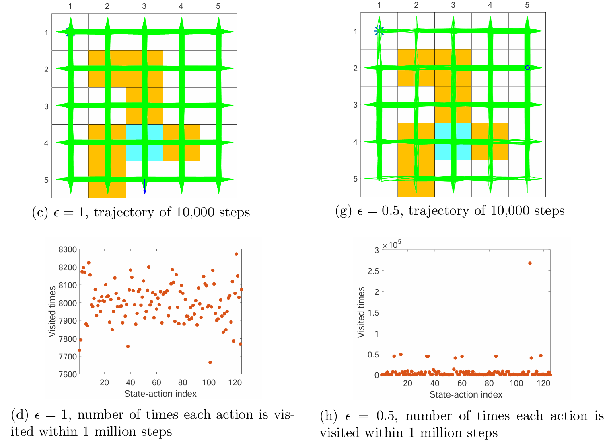

C4 蒙特卡洛方法
蒙特卡洛法
蒙特卡洛法（Monte Carlo method，MC）是一类通过随机采样来近似求解数值问题的计算方法。其核心思想是：利用大量**独立同分布（independently identically distribution，i.i.d.）**的随机样本，通过统计量（如均值、频率）来估计原本难以直接计算的数学量（如积分、期望、最优化解等）。
这里主要讨论 MC 方法在估计期望的应用，因为估计一个 state value 或 action value 的本质就是期望估计问题。
考虑一个随机变量 ，其所有可能的取值集合为 。若要估计 的均值（期望），可以采用两种方法：
-
基于模型的方法（model-based）：这里的模型指随机变量 的分布。若 的分布已知，可以直接求出 的期望
其中，若 是离散型随机变量， 为概率分布；若 是连续型随机变量， 为概率密度函数。
-
无模型的方法（model-free）：若随机变量 的分布未知，假设对 的若干次采样得到的样本集合为 ，则 的期望 可以被样本近似估计：
根据大数定律，当 时，有 。
通过样本均值来估计期望，这就是蒙特卡洛法，是一个 model-free 的方法。
大数定律：
对于随机变量 ，假设 是 i.i.d. 的样本。记 为样本均值，则有
这说明 是对随机变量 的无偏估计，且当 时方差趋于 （说明 依概率收敛到 ）。
入门：MC Basic
MC Basic 方法是将 MC 方法在 policy iteration 中最简单也是最核心的一个应用。
policy iteration 从 model-based 到 model-free
回顾一下 policy iteration，目的是求解 BOE，其迭代过程分为两步，分别是 policy evaluation 和 policy improvement。前者用于计算当前策略下的 state values，由此得到 action values，后者利用贪婪策略选取 action value 最大的动作。因此核心在于计算 action values，也即，每个状态-动作对 的回报的期望。其计算方法也分为两种：
-
基于模型的方法（model-based）：这个方法根据 action value 的贝尔曼公式，也是 policy iteration 中采用的方法。首先求出策略 下的 state values ，然后根据公式
可以计算出所有的 action values。这个方法依赖于已知模型的参数 ，因此是 model-based。
-
无模型的方法（model-free）：根据 action value 的定义：
也就是状态-动作对 获得的回报的期望，因此可以利用 MC 方法去估计期望的值：从 出发，遵循策略 可以采样得到一系列 episodes。假设有 个 episodes，第 个 episode 的回报为 ，则 可以被近似估计：
由大数定律知，当采样的 episodes 数量 足够大时，样本的均值估计会非常接近于真实的 。
将上述估计的方法应用到 policy iteration 的 action values 计算中，就得到了 MC Basic 方法。
MC Basic
将 MC 方法应用到 policy iteration 的 policy evaluation 计算中，便得到 MC Basic 方法。算法的其余步骤与 policy iteration 一样：初始化任意策略 ，每轮迭代有两步，分别为 policy evaluation 和 policy improvement。
policy evaluation
对于所有的状态-动作对 ，遵循策略 ，充分采样 episodes 并利用其回报的均值 近似 。
注意，这里直接估计 而不再估计 。否则根据 state values 求 action values 还是需要基于模型。
尽管估计的值 不精确，但是该算法依然可以收敛到最优策略。这就是广义策略迭代，在求解 BOE 的方法 truncated iteration 中也曾窥见。
policy improvement
与 policy iteration 一样使用贪婪策略，每个状态 下选取 最大的动作 。
伪代码

关于采样
这里通过一个例子来说明采样的 **episode length（回合长度）**对结果的影响，以及 **sparse reward（稀疏奖励）**对采样的影响。reward 设置为 ，折扣回报 。


episode length
由上图可以发现采样的 episode length 会极大地影响最终得到的最优策略。
由 (a)-(d) 可见，当采样的 episode 长度过短时，policy 和 state values 都不是最优的；在长度为 的极端情况下，只有与终点相邻的状态的 state value 非 ，而其它状态全为 ，这是因为采样的每一个 episode 的长度太短，以至于它们无法抵达终点，也就无法获得正奖励。但随着采样的 episode 越来越长，policy 和 state values 逐渐接近最优。
进一步观察可以发现，随着 episode 越来越长，离终点（正奖励）更近的状态会更早地获得非 的 state value。这很好理解，因为从一个状态出发，必须至少走一定的步数才能到达终点，获得正奖励，而 episode 的长度至少需要这么多步数，否则 state value 只能为 ，因此离终点更近的状态会更早地能够到达终点，拥有非 的 state value。
此外，episode 只需充分长（使所有状态都能够到达终点）而无需很长很长，例如 (g) 中 episode 长度为 时便能够获得最优策略，尽管估计的 state values 不是最优的。
sparse reward
在强化学习中，**sparse reward（稀疏奖励）**是一个常见但棘手的问题。简单来说，稀疏奖励是指 **agent（智能体）**在执行一系列动作以完成任务时，只在完成整个任务或达到特定阶段后才获得奖励信号。这种情况下，agent 很难从环境中获取有效的反馈，特别是在状态空间非常大时，导致学习过程缓慢甚至失败。
例如上述的 grid world 例子，如果状态空间非常大（例如网格尺寸变为 ），会需要非常长的 episode length 才能进行合理的采样，大大降低学习效率。
一个简单的解决方法是设计 nonsparse rewards（非稀疏奖励）。例如对于上述的 grid world，可以重新设计一个 reward 设置，使得 agent 在终点附近的状态时能够获得正奖励；这些状态在终点附近形成一个 “attractive field”，从而便于 agent 更快、更容易地找到终点。
MC Exploring Starts
MC Basic 方法非常简单，但实际上由于采样的效率太低（对于每一个状态-动作对 都需要充分采样）而不能使用。因此，基于 MC 方法的强化学习很重要的一个方面就是如何提高利用样本的效率。
MC Exploring Starts 方法从样本利用和策略更新两个方面大幅提升效率。
样本利用
考虑这样一个遵循策略 采样的 episode：
其中下标表示状态和动作的索引而非时间步。在 episode 中，每一次状态-动作对的出现称作对其的一次 visit。如果存在状态-动作对 的 visit，那么就可以用 后面的序列部分来估计 的 return。
对 visit 的利用有不同的策略：
-
initial visit：一个 episode 只利用最开始的状态-动作对。例如上述的 episode 只利用状态-动作对 的 visit，即只用来估计 的 return，而其它所有状态-动作对的 visit 都不使用。不难发现，MC Basic 用的就是这种方式。
-
initial visit 对状态-动作对的 visit 的利用率很低，事实上 episode 中的所有 visit 都能利用起来去估计相应状态-动作对的 return。我们可以将采样得到的一个原始的 episode 分解为不同起点的 episode：

因此在原始的 episode 中，每个状态-动作对 的 visit 都可以用它后面的序列部分（视作一个从 出发的 episode）来估计其 return。
由于在一个 episode 中，同一个状态-动作对 可能出现多次，在这种情况下，对 visit 的利用也分为两种：
- first-visit：只利用 的第一次 visit 去估计其 return。例如在上面的原始 episode 中， 先后出现了两次，则只利用以第一个 为起点的 episode 的 return，去估计 的 return。
- every-visit：利用 的所有 visit 去估计其 return。在样本的利用率上，该方法显然是最好的。如果一个 episode 足够长，那么它有可能会访问到所有状态-动作对很多次，此时 every-visit 能够充分地利用这些 visit。
策略更新
MC Basic 每轮迭代中，在估计一个 action value 时，需要先充分采样多个从 出发的 episode，然后用这些 episode 的 return 的均值作为 期望的估计。这种方法的弊端是 agent 必须等所有 episode 的采样结束后才能进行策略的更新。
因此，MC Exploring Starts 的做法是每轮仅采样一条 episode 并用 first-visit 或 every-visit 的方式去更新对每一个 visit 到的 action value 的估计，随后更新策略。尽管这些估计可能非常不准确，但仍然可以让迭代收敛（也就是广义策略迭代）。
伪代码

图中的伪代码采用的是 every-visit 的方法。可以注意到，every-visit 的过程是在采样的 episode 中倒序进行的，这实际上是一种技巧，能够减轻计算量。
此外，policy improvement 步骤也可以放在循环外，也就是利用完一个 episode 更新所有的 后再一次性更新策略。
MC Exploring Starts 的弊端
MC Exploring Starts 使用贪婪策略，要求对每一个状态-动作对 作为起点都要采样充分多的 episode，因为只有当每一个 都被访问到足够多次时，才能够保证 action values 足够的精确。这事实上也是"Exploring Starts"命名的由来：通过控制“起始点”来强制“探索”。但是这个条件在很多场景下都难以满足，特别是每次都要与环境进行复杂的物理交互时。因此，产生了 MC -Greedy 方法，通过改变贪婪策略，让生成 episode 的策略 具有更多的探索性质，从而避免需要对 都作为起点采样 episode。
这里之所以强调每一个 都需要作为起点采样足够多次，是因为在无模型强化学习中，如果总是从固定的初始状态开始采样，并且策略是确定性的，那么某些状态-动作对可能永远无法被访问到（类似“永远不了解其他的路”）。为了解决这个探索问题，MC Exploring Starts 采取的理论方案就是：让每个可能的状态-动作对都有非零概率作为一条轨迹的起始点。
MC -Greedy
MC Basic 和 MC Exploring Starts 为了保证每一个状态-动作对 都能被充分采样到，需要对每一个 都作为起点采样充足的 episode，本质原因是它们采用贪婪策略。MC -Greedy 通过利用 **soft policy（软策略）**来实现只需采样一个 episode 就能满足每一个状态-动作对都能被充分采样。
一个策略是 soft 的，当它在任何状态下对任何动作都有概率采取。
当遵循一个 soft 策略去采样一个 episode 时，如果这个 episode 足够的长，那么所有的状态-动作对 都会被访问很多次（有很多次 visit）。
-Greedy
-Greedy 是一种软策略，也是随机策略。它对 greedy action（贪心动作）拥有最高的概率，而对其它动作具有均等的非零概率。
设 ，则 -Greedy 策略定义如下
其中 表示状态 下的动作空间的大小。
greedy action 的概率始终比其它动作的概率高，因为对于任意 都有
可以见得，当 时，就变成了贪婪策略；当 时，所有动作包括 greedy action 的概率全都相等。
MC -Greedy
将 -Greedy 应用到 MC learning 中，只需要将 policy improvement 的 greedy policy 替换为 -greedy policy 即可。
具体而言，MC Basic 和 MC Exploring Starts 的 policy improvement 是在求解方程
其中 表示所有可能的策略构成的集合。上式的解为
其中 。
先将要求解的方程改为
其中 表示在给定 的情况下，所有 -greedy 的策略所构成的集合（显然 ）。这种方式能够将之前解得到的 greedy 策略强制转变为 -greedy 策略，现在的解为
其中 。
由此得到的 MC learning 算法称为 MC -Greedy。
当给予充分的采样时，MC -greedy 算法显然也会收敛到最优策略。这是没有任何疑问的，因为其本质也是在求解 BOE。唯一不同之处是策略空间 变为了 ，也就是说最后收敛到的最优策略是在 中的最优策略，显然不是之前确定性的最优策略——贪婪策略。当 足够小时， 中的最优策略会非常接近 中的最优策略。
伪代码

这里采用的仍然是 every-visit 的方式。
的选取
**exploration（探索）**和 exploitation（利用）是在强化学习中的一个基本的权衡：
- exploration 指策略尽可能多地采取不同的 action，从而所有的 action 都能够被访问到并得到较好的估计。
- exploitation 指改进的策略应该采取 action value 最大的 action，也就是 greedy action。这是策略最优性的保证。
但实际上，由于估计 action values 需要足够的采样，而 exploitation 会导致不充足的采样（在每一个 episode 中），因此在 exploitation 的同时需要保证一定的 exploration，尽管会牺牲 exploitation 带来的最优性。
-Greedy 策略实际上就是牺牲了 greedy 策略的最优性，来增强策略的探索性。其对 值的选取就是在平衡 exploitation 和 exploration。通过增大 来增强 exploration，通过减小 来增强 exploitation 和 optimality。
一个比较好的做法是在采样的一开始使用较大的 来尽可能多地访问所有的状态-动作对（exploration），以保证前期对 action values 较精确的估计。随着策略逐渐改进，逐渐减小 来保证 action values 和 optimality（exploitation）。
下面这张图想体现的是，当采样的 episode 足够长时， 时所有状态-动作对被访问到的次数大致是均等的； 时尽管也能够访问到所有的状态-动作对，但是出现了不均等。

